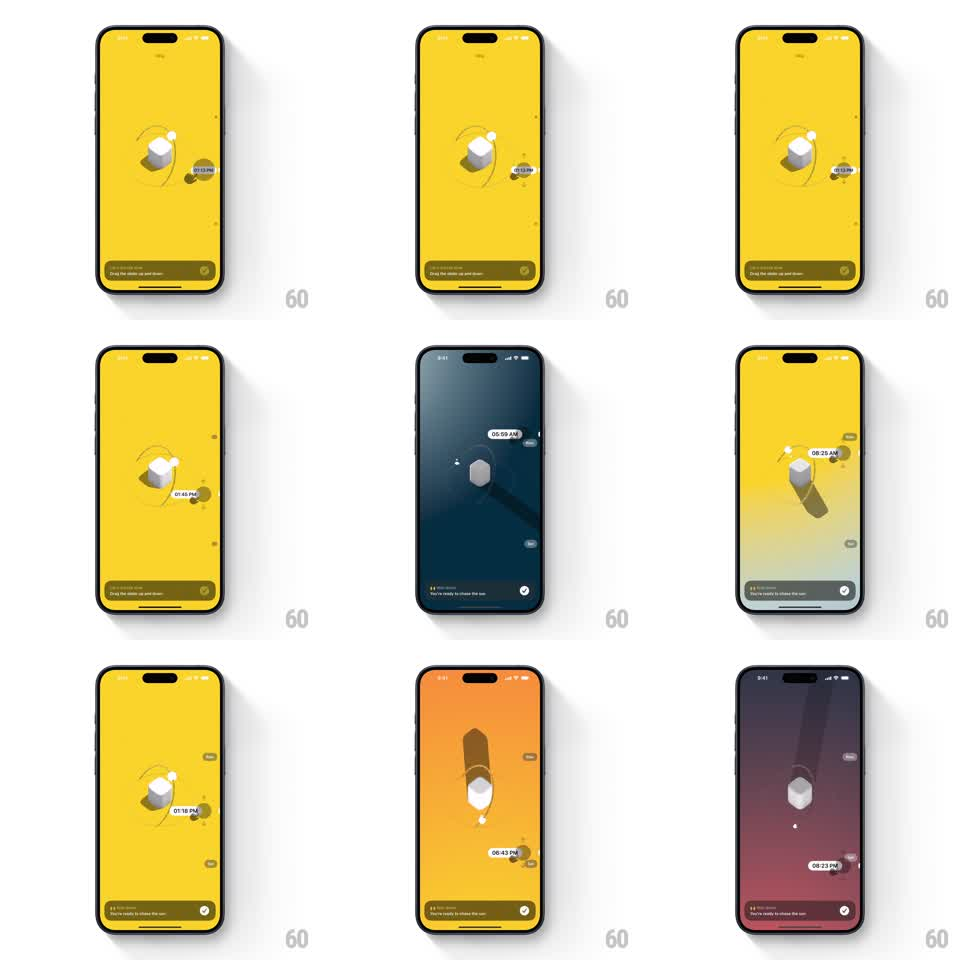

Media
Frame-by-frame

Rebuild this interaction 1:1: Sunlitt's time scrubber - dragging a vertical slider rotates the sun around the 3D monolith while the whole background transitions through the colors of the day, a time tooltip tracking the sun.

Rebuild this interaction 1:1: Sunlitt's time scrubber - dragging a vertical slider rotates the sun around the 3D monolith while the whole background transitions through the colors of the day, a time tooltip tracking the sun.
## Integration
Integration: stack-agnostic spec - springs given as stiffness/damping, timed motions as duration + curve; map every value to your framework and animation library of choice.
## Scene
A 3D monolith center-screen with a sun dot on its orbit arc and a tooltip chip showing the time ("06:09 AM", "06:43 PM"). The background is the sky: yellow midday, pale morning, orange sunset, deep navy night, purple dusk. Bottom toast carries the onboarding copy. A vertical slider sits at the screen edge.
## Motion spec
Pattern: scrub-driven sun path with sky color grading.
- Drag the slider (or scrub vertically anywhere): the sun dot travels its orbit 1:1 with the drag - bottom of slider is night, top is noon.
- The background crossfades continuously through the sky palette keyed to sun altitude: navy (night) to pale blue (morning) to saturated yellow (midday) to orange (sunset) to purple (dusk) - an interpolated gradient, never stepped.
- The tooltip chip rides beside the sun dot, updating its time text live; it flips side when near screen edges.
- The monolith's shadow sweeps and lengthens with sun position in real time.
- Release: the sun holds its scrubbed position (no snap); the scene settles with a 200ms ease on any residual velocity.
## Calibration
- Color interpolation must be smooth per-frame - banding between sky states breaks the illusion.
- Night states dim the monolith to a silhouette; keep it visible, not black-on-black.
## Reduced motion
Sun moves with the drag; sky changes via discrete fades at scene boundaries.
## Don't miss
- The tooltip is anchored to the sun, not the slider thumb - the sun is the object of truth.
- The sun dips below the "horizon" at night rather than clamping at the edge.